|
Ritorna all'indice delle parrocchie
Il numero abbinato ad ogni famiglia indica la relativa posizione nello Stato delle Anime
1 - Prete Bartolommeo Cornacchini - Paroco di questa Parrochia
2 - Lottorenghi Niccolò - proprietario di terreni - 2
3 - Masini Anzano - proprietario e lavoratore de suoi terreni
4 - Machelli Domenico - proprietario di propri terreni e attende a quelli
5 - Guidi Orazio - proprietario e lavoratore de suoi terreni
6 - Giorgi Bartolommeo - proprietario e lavoratore di alcuni suoi pochi terreni
7 - Landi Lorenzo . proprietario di pochi terreni
8 - Cappelli Bernardo - proprietario e lavoratore di alcuni terreni
9 - Giorgi Agnesa - vedova - proprietaria di alcune terre e attende a quelle
10 - Bonaccorzi Francesco - proprietario e lavoratore de suoi terreni
11 - Meiarini Antonio - contadino attende al podere
12 - Guidi Jacomo - proprietario e lavoratore di pochi terreni
13 - Corti Domenico - proprietaria di alcuni terreni e va a opera
14 - Giorgi Giorgi - proprietario e lavoratore di pochi terreni
15 - Lapi Francesco - proprietario e lavoratore di terre
16 - Neri Jacomo - proprietario e lavoratore di alcuni terreni
17 - Mecacci Francesco - proprietario e lavoratore di alcune terre
18 - Anselmi Arcangelo - proprietario e lavoratore di terre
19 - Rosi Giovanni - proprietario e lavoratore di terre
20 - Rosi Paolo - proprietario e lavoratore di alcune terre
21 - Fantini Pietro Paolo - proprietario e lavoratore di alcuni terreni
22 - Mariotti gaetano - proprietario e lavoratore di alcune terre
23 - Giorgi Jacomo - proprietario e lavoratore di terre
24 - Fralassi Pietro - proprietario e lavoratore di alcune terre
25 - Rosi Matteo - proprietario lavoratore di terre
26 - Bastianini Francesco - proprietario lavoratore di alcune terre
27 - Nepi Girolamo - proprietario lavoratore di terre
28 - Rosi Jacomo - proprietario lavoratore di terre
29 - Palazzini Lucrezia - vedova - va a opera sopra terreni e accatta - 2
30 - Guerrini Pietro - proprietario e lavoratore di terre
31 - Nepi Giuseppe - proprietario e lavoratore di alcune terre
32 - Parri Agata - vedova - va a accattare
33 - Montegrossi Arcangelo - proprietario e lavoratore di terre
34 - Mori Maddalena - maritata - proprietari a di alcuni terreni
35 - Savoi Teresa - vedova - va a opera sopra terreni e accatta
36 - Saurini Francesco - proprietario di pochi terreni e va a opera
37 - Vignioli Angelica - fila il lino
38 - Gori Mattio - proprietario e lavoratore di pochi terreni
39 - Romboli Domenico - proprietario e lavoratore di terre
40 - Galassi Arcangelo - proprietario e lavoratore di pochi terreni
41 - Fralassi Andrea - proprietario e lavoratore di pochi terreni
42 - Valentini Lucia - proprietaria e lavora sopra terreni
43 - Gigli Giovanni Battista - proprietario e lavoratore di pochi terreni
44 - Sarugi Carlo - va a opera sopra terreni
45 - Giorgi Anzano - proprietario e lavoratore di terreni
46 - Giorgi Agostino - attende a suoi terreni e va a opera
47 - Bolognini Giuseppe - proprietario e lavoratore di pochi terreni
48 - Brunetti Giuseppe - proprietario e lavoratore di pochi terreni
49 - Giorgi Agostino - proprietario e lavoratore di pochi terreni
50 - Giorgi Jacomo - proprietario e lavoratore di pochi terreni
51 - Machini Jacomo - proprietario e lavoratore di poche terre
52 - Guidi Giovanni - proprietario e lavoratore de suoi terreni
53 - Guidi Francesco - proprietario e lavoratore di pochi terreni
54 - Brunetti Francesco - proprietario e lavoratore di pochi terreni
55 - Brunetti Santi - proprietario e lavoratore di terreni
56 - Guidi Galgano - proprietario e lavoratore di terreni
57 - Lasi Giuseppe - proprietario e lavoratore di pochi terreni
x - Machini Agniese - vedova - proprietaria di pocho terreno e va a accattare
x - Giorgi Giovanni Battista - proprietario e lavoratore di alcuni terreni
x - Monciatti Agostino - contadino ed attende al podere
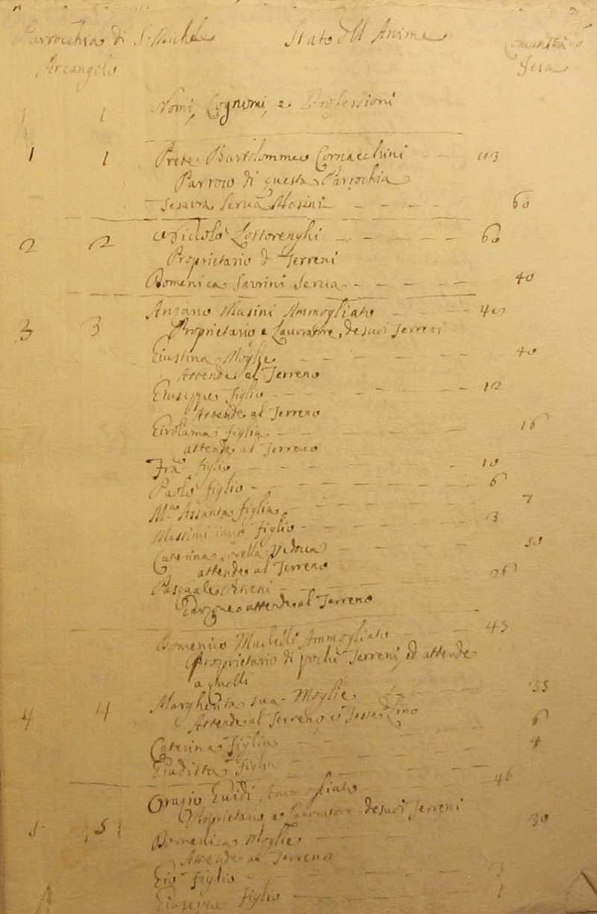
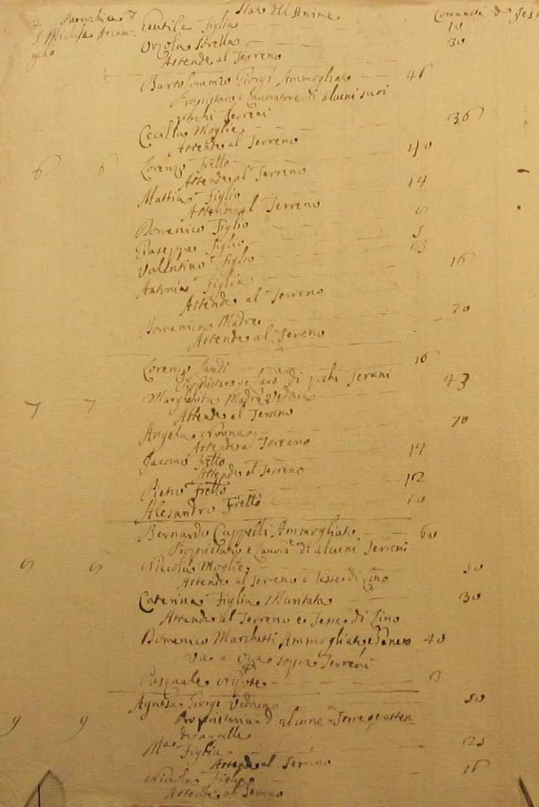
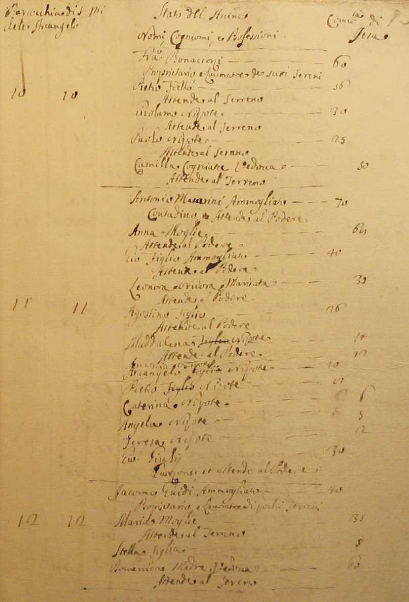
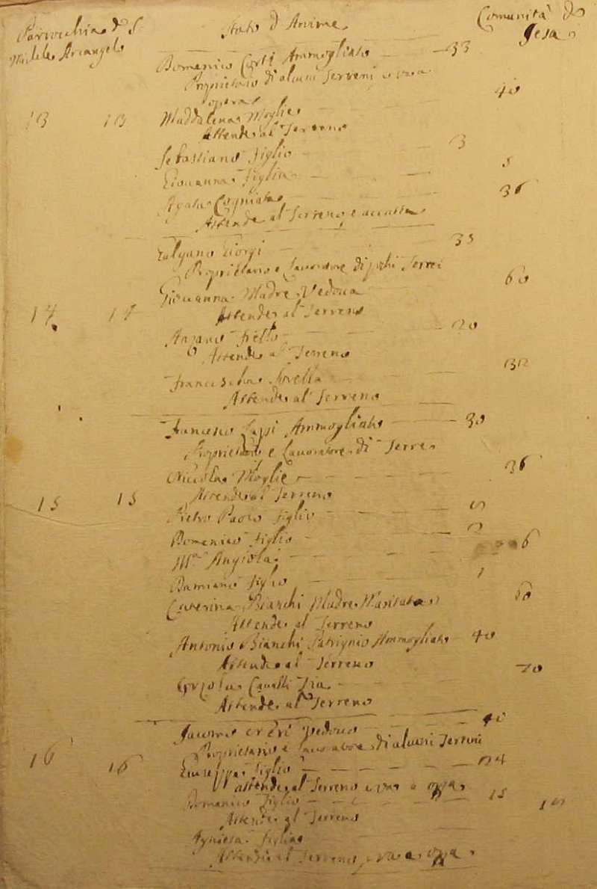
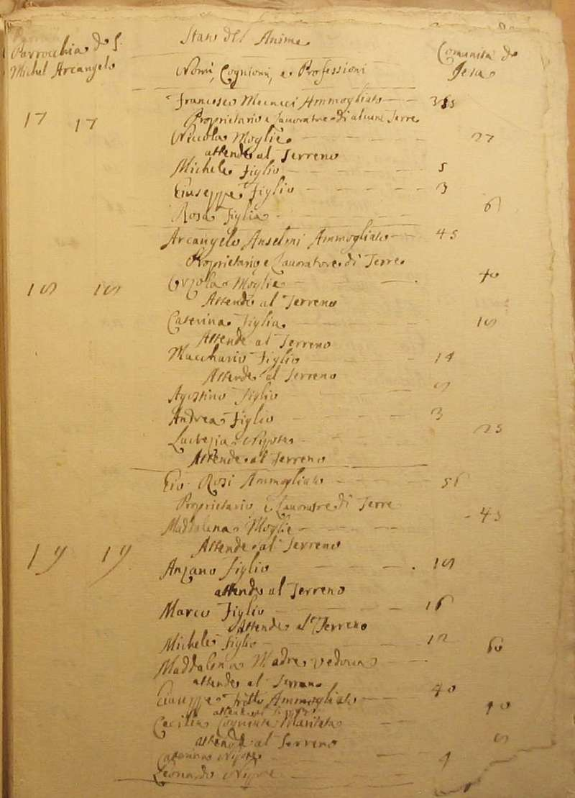
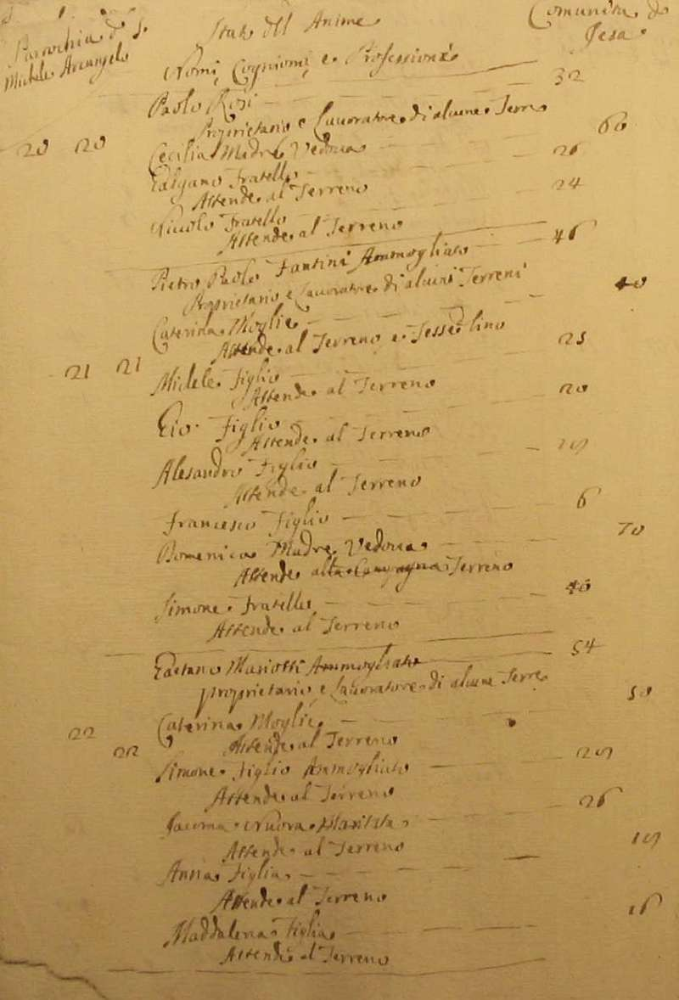
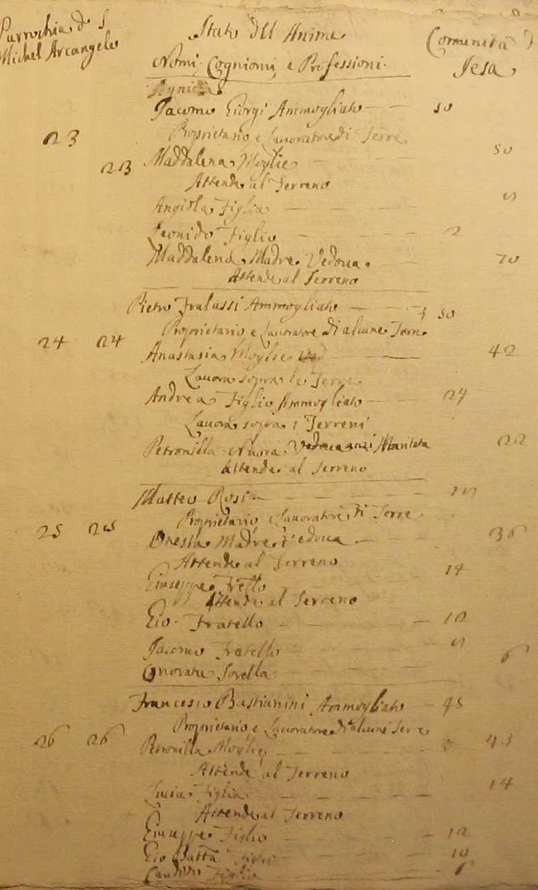
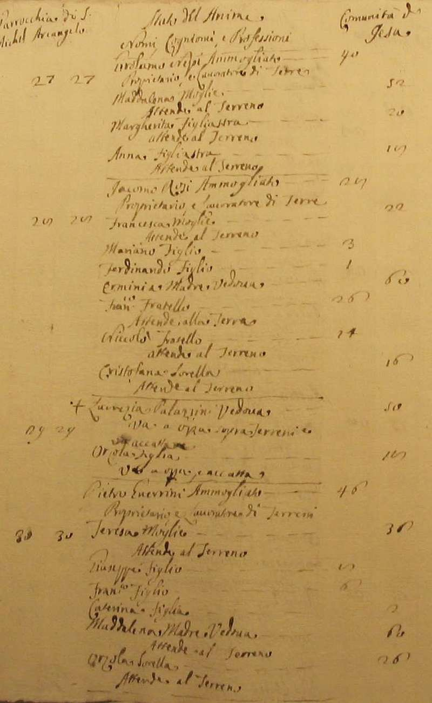
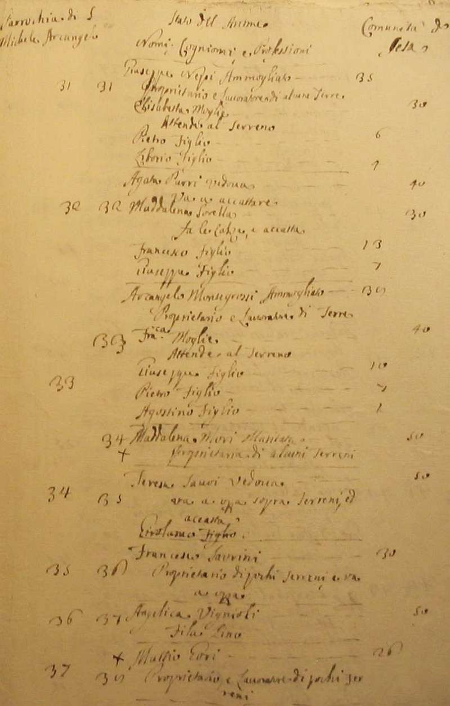
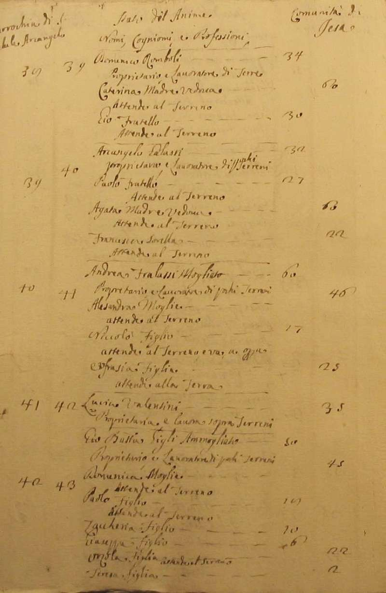
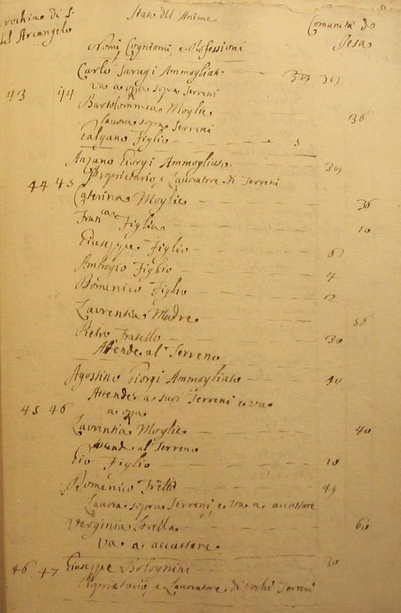
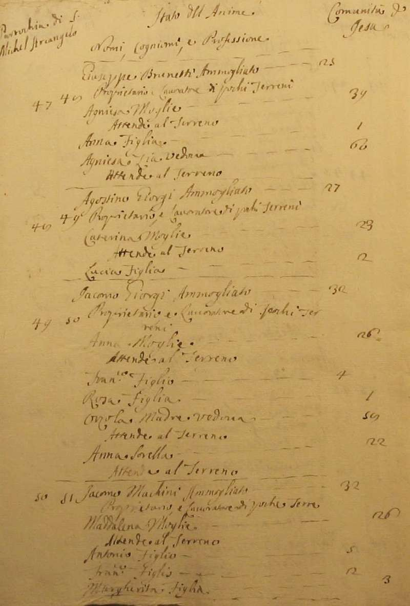
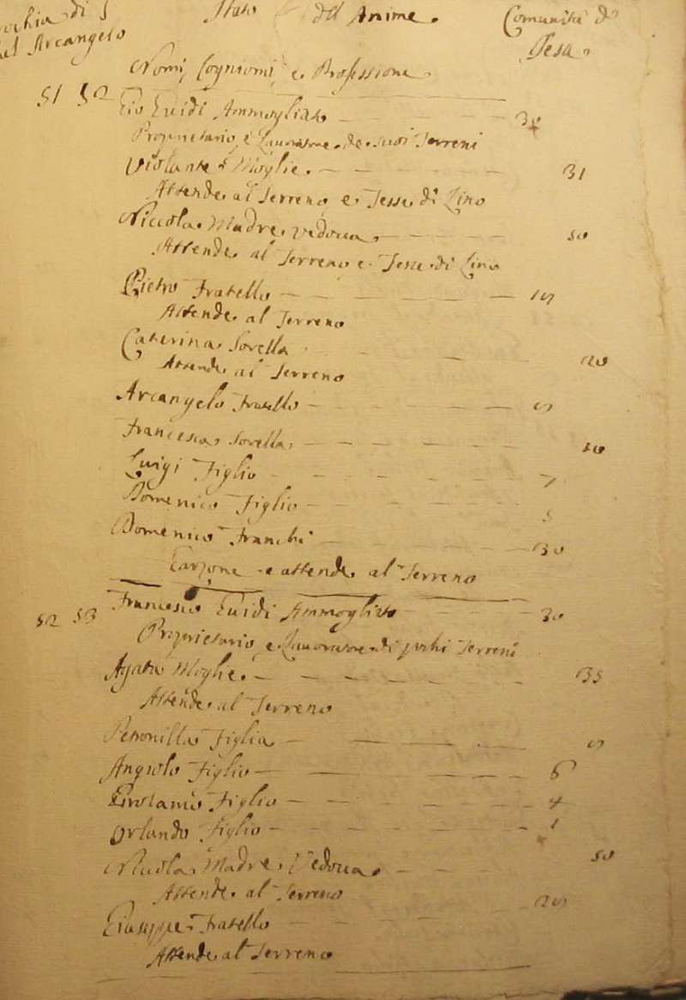
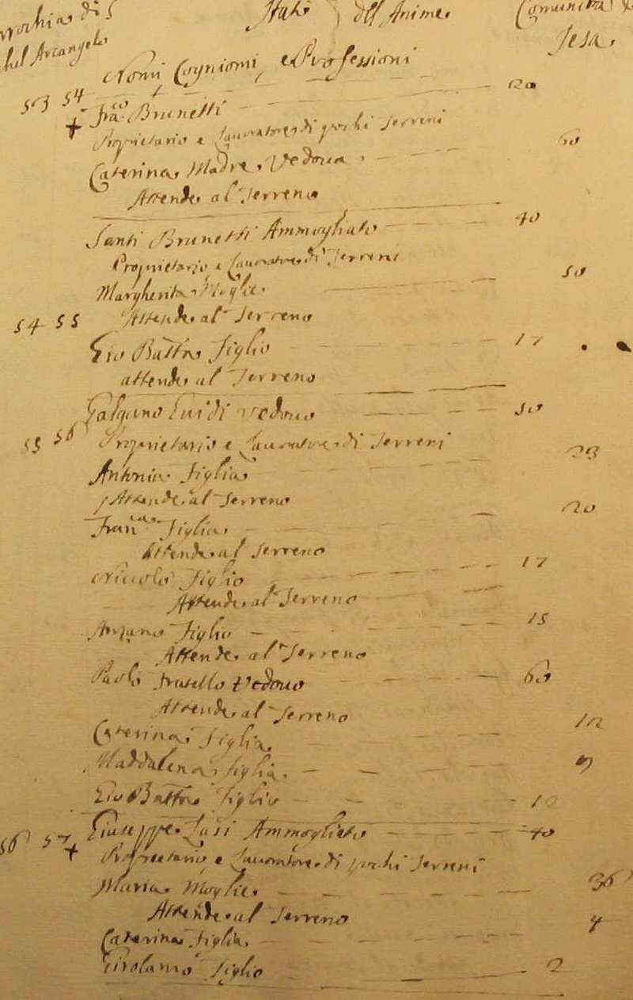
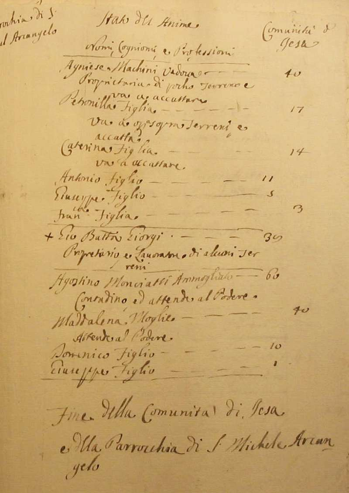
Torna ad inizio pagina
Ritorna all'indice delle parrocchie
| |

|